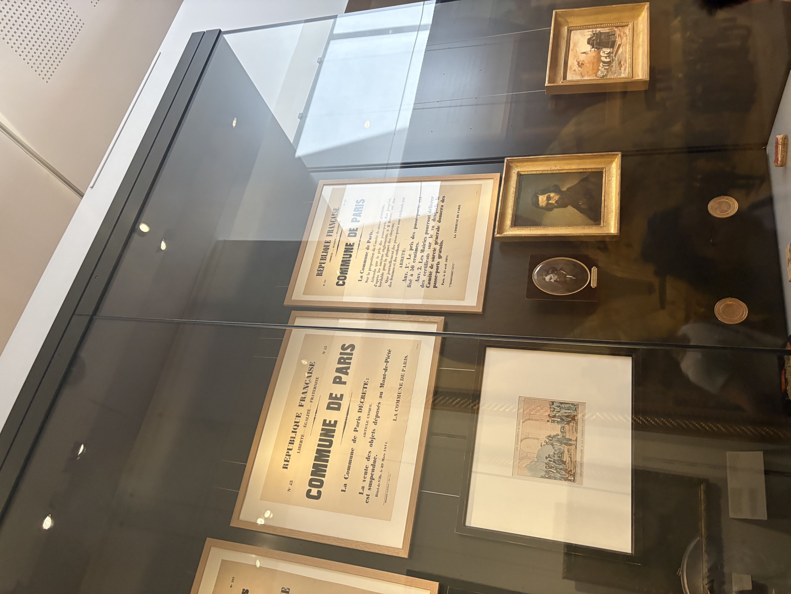

Next, we are going to discuss some paintings and artifacts from the 1871 Paris Commune. You should make your way down to floor 1 and follow the signs toward the section of artifacts from the 19th century. You can also use the map on the home page to guide you. The artifacts are arranged on the floor in chronological order, which will be of use when searching for the year 1871. You will know when you have arrived to the correct spot when you see the following display case of artifacts:
Collection of Pieces About the Commune

Please listen to the recording to learn more about these items and how they relate to conceptions of liberty in Anarchist and Marxist philosophy.
Philosophical Questions
- One of the images shows National Guardsmen with rifles defending the Commune. Anarchist philosophy rejects coercive authority, yet the Commune needed force to survive. Can the tension between anti-statism and the practical necessity of organized violence be reconciled?
- Marx wrote after the Commune that “the working class cannot simply lay hold of the ready-made state machinery, and wield it for its own purposes.” Do you think that if the ruling class had not destroyed the Commune so quickly, it would have been able to succeed? Or did the conditions it emerged under make it destined to fail?
- How does the conservation of artifacts (the decrees, portraits, matchboxes) preserve the legacy of a historical event, and what (if any) political impacts can this have?